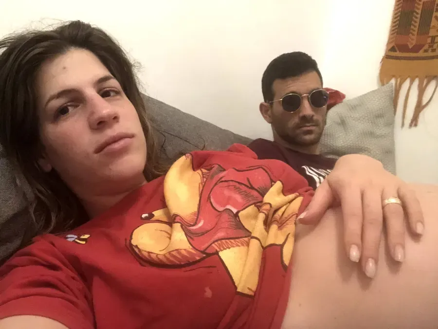

המסמך שאת עומדת לקרוא מגיע ישירות מהלב שלי. אם הייתי נחשפת אליו לפני 10 שנים, הוא היה חוסך לי שנים של כאב ופחד.
אני מחכה לשמוע אם זה היה ברור ועזר לך, תזכרי לחזור ולספר לי 🤍
בקצרה
ביום אחד במרץ 2020 הבנתי כמה העתיד של המשפחה שלנו תלוי ביכולת שלי להמשיך לעבוד, ומשם שיניתי את הדרך שבה אני מסתכלת על כסף.
במקום למדוד כמה יש לנו בעו״ש, התחלתי למדוד כמה מהכסף שהרווחנו הפך לנכסים. ככה ההון שלנו גדל ביותר מפי 8.
כאן יש לך את ארבעת הסודות, ארבעת המנועים ו-9 הצעדים שהייתי עושה אם הייתי מתחילה היום מהשקל הראשון.
במשך שנים ידעתי להרוויח כסף

היה לי עסק מצליח לאיפור ושיער, היומן שלי היה מלא חודשים קדימה, והצלחנו גם לחסוך.
ואז הגיע 17 במרץ 2020.
באותו יום גיליתי שאני בהיריון עם אלה, ובמקביל מדינת ישראל נכנסה לסגר הראשון. החתונות נעצרו, וכלות ביקשו לקבל בחזרה את המקדמות שלהן.

וברגע אחד הבנתי עד כמה העתיד שלנו תלוי ביכולת שלי להמשיך לעבוד.
הכסף שחסכנו נתן לנו אוויר. הנכסים שבנינו אחר כך נתנו לנו ביטחון.
מאותו רגע שיניתי את הדרך שבה אני מסתכלת על כסף. במקום למדוד כמה כסף יש לנו בעו״ש, התחלתי למדוד כמה מהכסף שהרווחנו הפך לנכסים ונשאר בבעלותנו.

זה המנגנון שעזר לנו להגדיל את ההון העצמי שלנו ביותר מפי 8, ואנחנו ממש רגע לפני המשכנתא על הדירה השלישית שלנו.
אם גם את מרגישה שאתם מרוויחים, אבל הכסף לא באמת בונה לכם משהו, המסמך הזה בשבילך.
הסוד הראשוןמדדתי הון, במקום רק הכנסה
המספר המרכזי שהתחלתי לעקוב אחריו היה ההון העצמי שלנו. החישוב שלו פשוט:
בצד של הנכסים חיברתי את הכסף הנזיל, תיקי ההשקעות, הפנסיות, קרנות ההשתלמות, הקופות והחלק שלנו בנכסי הנדל״ן. בצד של ההתחייבויות חיברתי את המשכנתאות, ההלוואות וכל סכום שאנחנו עדיין חייבים.
תזיזי את הסכומים. לא צריך מספרים מדויקים, ושום דבר לא נשמר.
המספר הזה הראה לי כמה באמת בנינו. משכורת מראה כמה כסף נכנס החודש. הון עצמי מראה כמה מהכסף שהרווחנו לאורך השנים הצלחנו לשמור, להשקיע ולהפוך לנכסים.
פעם בכמה חודשים חזרתי למספר הזה ובדקתי אם הוא גדל.
הסוד השניבניתי מנגנון, במקום להסתמך על כוח רצון
יצרתי מסלול קבוע לכסף שלנו:
ההחלטה התקבלה מראש.
ככה הוראת הקבע הפכה מבחינתי לאחד הכלים הכי חשובים בבניית הון. בכל חודש, עוד לפני שהכסף נטמע בהוצאות השוטפות, חלק ממנו עבר להשקעות.
זה התחיל מהסכום שהתאים לנו באותו זמן. כשההכנסה גדלה, הגדלנו גם את הסכום שעבר לנכסים.
המטרה שלי הייתה להגדיל בהדרגה את "קצב רכישת הנכסים" שלנו: כמה כסף מתוך ההכנסה שלנו הופך בכל חודש למשהו שנשאר בבעלותנו ויכול להמשיך לצמוח.
יש לי סכום קבוע שאני שומרת בעו״ש, מספר אחד שאני יודעת בעל פה.
⬇️ ירד ממנו? סימן שהוצאנו החודש יותר. אני מושכת מקרן החירום ומעבירה לעו״ש, כדי להגן על הסכום הזה.
⬆️ יש יותר? מעבירה אותו להשקעות לטווח קרוב או רחוק, לפי המטרה הבאה שלנו.
ככה אני לא צריכה לעקוב כל חודש על מה בדיוק הוצאתי, אלא לנהל את הדברים מלמעלה.
נתתי לכל שקל תפקיד, לפי הזמן
חילקתי את הכסף שלנו לארבעה כדים. החלוקה הזאת אפשרה לי לשלב בין ביטחון לבין צמיחה.
מתי תצטרכי את הכסף?
קרן החירום נשמרה במקום נזיל ובסיכון נמוך, כי התפקיד שלה הוא להיות זמינה. כסף למטרות קרובות קיבל מסלול שמתאים למועד שבו נצטרך אותו. והכסף לטווח הרחוק הופנה להשקעות ארוכות טווח ומפוזרות.
בכל החלטה שאלתי שאלה אחת: מתי נצטרך את הכסף הזה?
התשובה קבעה מה המקום הנכון עבורו.
התחלתי מהכסף שכבר היה לנו
לפני שהעברתי עוד כסף להשקעה חדשה, בדקתי מה קורה עם הכסף שכבר צברנו. עברתי על הפנסיות, קרנות ההשתלמות, הקופות, החסכונות וההשקעות, ובדקתי:
הבנתי שההון שלנו יכול לגדול גם דרך החלטות טובות יותר לגבי כסף שכבר קיים, ולא רק על כסף חדש.
שינוי מסלול, הפחתת דמי ניהול, סגירת הלוואה יקרה או העברת כסף שעמד בלי מטרה, יכולים להשפיע במשך שנים קדימה, ותכלס בפני עצמם ייצרו לנו כמה מיליונים לעתיד. זה לא כסף שאני משתמשת בו היום, אבל הוא חד משמעית חלק מההון העצמי שלנו.
ארבעת המנועיםמה הגדיל את ההון שלנו
הגידול בהון שלנו נוצר מחיבור בין ארבעה מנועים שפעלו במקביל:
מנוע 1: הגדלת ההכנסה
העסק היה מנוע משמעותי. ככל שהצלחתי לייצר יותר הכנסה, הייתה לנו יכולת גדולה יותר לרכוש נכסים. לכן חלק מהכסף הופנה גם להשקעה בעסק, במוצרים חדשים, בשיווק ובמקורות הכנסה נוספים. רק על ייעוץ ופיתוח עסקי הוצאתי בשנתיים האחרונות מעל 150,000 ₪, וזה הכניס הרבה יותר.
מנוע 2: השקעות קבועות בשוק ההון
השקעות לטווח ארוך שמבוססות על פיזור, עלויות נמוכות והתמדה. דרך פשוטה שאפשר להמשיך איתה גם בתקופות עמוסות, וגם כשהשוק עולה או יורד. הוראות הקבע המשיכו לרכוש לנו נכסים בכל חודש, והתשואה נשארה מושקעת ויצרה תשואה נוספת.
מנוע 3: נכסים פנסיוניים
גם הכסף הזה שייך לנו, מושקע עבורנו ויכול לצמוח עשרות שנים. בדקנו מסלולים, דמי ניהול והתאמה לטווח שלנו. במקום להתייחס אליו ככסף רחוק שאפשר לשכוח, התייחסנו אליו כמנוע נוסף.
מנוע 4: נדל״ן ומינוף מחושב
כשהיה לנו בסיס יציב יותר, השתמשנו בחלק מההון כדי לרכוש נדל״ן. בכל עסקה בדקנו את ההון שנדרש, גובה ההתחייבות, ההחזר החודשי, הסיכונים ואפשרויות היציאה.
הגדלנו את הסכום שנכנס למשחק
- הרווחנו יותר.
- העברנו יותר כסף לנכסים.
- הכסף שכבר השקענו המשיך לצמוח.
- החזרי המשכנתאות הגדילו את החלק שלנו בנכסים.
- הפנסיות וקרנות ההשתלמות המשיכו להיצבר.
בכל פעם שנכנס סכום נוסף, בונוס, רווח גבוה יותר בעסק או עלייה בהכנסה, חלק ממנו הופנה להגדלת ההון. כך הצלחנו גם להעלות את רמת החיים שלנו וגם להגדיל את קצב רכישת הנכסים.
🤰🏻 אם הייתי מתחילה היום מהשקל הראשוןזה הסדר המדויק שבו הייתי פועלת
זה המסמך שהייתי רוצה לקבל כשאני התחלתי.
הדרך שלנו להגדיל את ההון ביותר מפי 8 הייתה בנויה מעוד החלטה, ועוד נכס, ועוד הוראת קבע.
לאורך זמן, ההחלטות הקטנות התחברו למערכת ששינתה את הביטחון ואת האפשרויות של המשפחה שלנו.